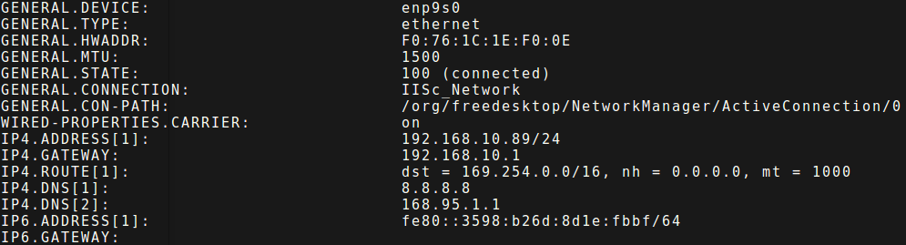

Getting Started¶
This guide will help you to quickly get started with a single node instance of IUDX and start publishing data from a device.
Prerequisites¶
Install Docker
sudo apt install docker.io
Add user to the docker group
sudo usermod -a -G docker $USER
Logout and log back in.
Run
ifconfigand note down the name of the interface you’re connected to.In the above example the interface name is
enp9s0Now run:
sudo nmcli device show enp9s0
Replace
enp9s0with your respective interface name. The output should be something like thisNote down the DNS from
IP4.DNSsectionAdd DNS obtained in the previous step to the file
/etc/docker/daemon.jsonIf the file does not exist, create it. The entry should look something like this{"dns": ["8.8.8.8", "8.8.4.4"]}
Add the obtained DNS to the above JSON array. So the final entry should look something like this:
{"dns": ["8.8.8.8","8.8.4.4","168.95.1.1"]}
Of course, the DNS will change according to your network.
Add DNS in
/etc/default/dockerfile as follows:DOCKER_OPTS="--dns 8.8.8.8 --dns 8.8.4.4 --dns 168.95.1.1"
Restart Docker
sudo service docker restart
{kind=link}
{kind=link}
IUDX Installation¶
Clone IUDX git repo
git clone https://github.com/rbccps-iisc/corinthian.git
Install IUDX
cd docker/ ./install
Registering your first device¶
Once IUDX has been installed you can now start registering devices with it. Let’s create a simple test device for the sake of illustration
Get the randomly generated admin apikey for the current installation by:
cat vars/admin.passwd
Register a device by using this apikey as follows:
./tests/register.sh admin <admin_apikey> <device_name> E.g. ./tests/register.sh admin RFS3zYWpwfqse1eHFyZUydY4q0rI9XzN streetlight
This will give you the details of the registration
{ "id": "admin/streetlight", "apikey": "CqLXHzTTXOAWmPRaoLpNRKCd4MfAaHCJ" }
Publishing from your device¶
You can now publish data from this device using:
./tests/publish.sh admin/streetlight CqLXHzTTXOAWmPRaoLpNRKCd4MfAaHCJ admin/streetlight routing_key protected test_message
This will publish
test_messageto the exchangeadmin/streetlight.protectedwith routing key asrouting_keyand message type asprotectedThat’s it! You can similarly register more devices and apps with the IUDX middleware.